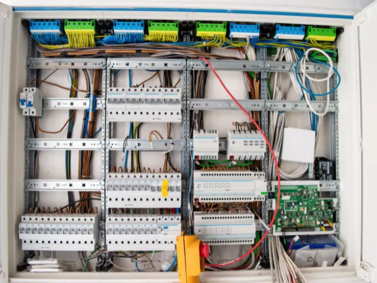
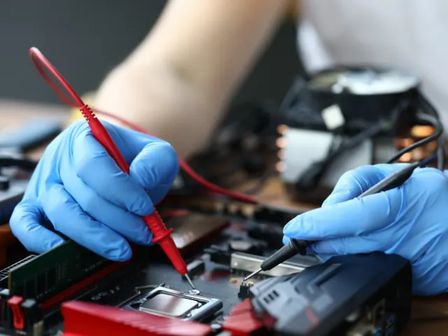

De slimme technische systemen achter het alledaagse leven in Nijmegen
Gepubliceerd op 24 juni 2024

Techniek is vrijwel overal en altijd aanwezig in ons leven, ook op momenten waarop we het amper beseffen. Achter de schermen draaien overal technische systemen om tal van processen aan te sturen en daar profiteren we van, al hebben we dat vaak zelf niet eens door. In 2013 was Nijmegen bijvoorbeeld de eerste gemeente in het land die gebruik ging maken van een nieuwe methode om passanten te tellen door middel van sensoren. Sindsdien kan nauwkeurig in kaart worden gebracht hoe groepen mensen zich door de stad verplaatsen. De verkeerssystemen kunnen hierop worden aangepast.
Privacygevoelige informatie
Voorheen werd voor passantentellingen gebruik gemaakt van een systeem dat wifi tracking wordt genoemd. Zo’n systeem is gebaseerd op het registeren van het MAC-adres van iemands mobiele telefoon en wordt om die reden als privacygevoelig beschouwd. Door op verschillende plekken sensoren op te hangen die met behulp van camera’s de passanten registreren, om vervolgens die beelden direct om te zetten naar anonieme data, ben je dat privacygevoelige element kwijt. Alle gegevens komen op een centrale plek in een schakelkast bij elkaar (voor meer informatie over een schakelkast, klik hier) en worden verder in het systeem gebruikt voor analytische doeleinden. Op die manier heb je voldaan aan de hoge eisen die de privacywetgeving stelt en beschik je desondanks over accurate gegevens.

Het hart van bedrijfsautomatisering
Ook veel grote en kleine ondernemingen in Nijmegen hebben in de afgelopen periode ingrijpende wijzigingen aangebracht in hun machineparken. Vooral in fabrieken draait een productielijn tegenwoordig vaak op basis van een PLC die het gehele proces aanstuurt en eventueel ook beveiligt. Zo’n PLC is een klein kastje dat machines kan aansturen op basis van een repeterend schema dat per bedrijfssituatie anders is. Je programmeert het kastje naar wens en vervolgens heb je er geen omkijken meer naar. Hierdoor heb je als bedrijf een systeem dat sterk verbeterd is op het gebied van precisie, betrouwbaarheid en controle. Een PLC voert specifieke instructies en logische programma’s uit op basis van ingangssignalen van sensoren of operators en vormt aldus het hart van je automatisering.

Optimale controle
Met behulp van deze techniek hebben bedrijven tegenwoordig optimale controle over bijvoorbeeld de temperatuur en druk in een machine en kan bovendien het energieverbruik worden gereduceerd. Deze vorm van automatisering zorgt voor consistentie in de productkwaliteit en minimaliseert de noodzaak van handmatige tussenkomst in het totale productieproces.